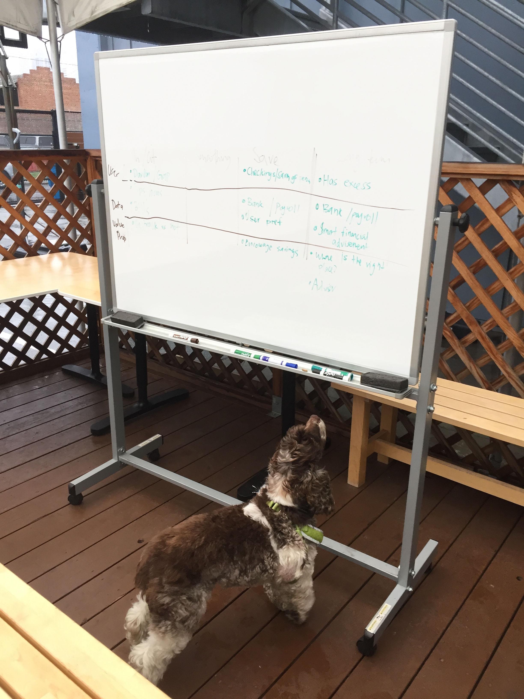

ROLE
I worked in a team of 2 PMs and 4 engineers, and involved in user research, wireframing, prototyping, visual design, QA and implementation.
Outcomes
Before

After


Results
With the redesign, we got more users subsidies, lowering their health insurance cost. This project had the highest bump in our E2E conversion in Stride history.
25%
INCREASE IN USERS WHO CHECKED IF THEY WERE ELIGIBLE
50%
INCREASE IN SUBSIDY ELIGIBLE USERS
33%
INCREASE IN E2E CONVERSION
Process
I started the project off with user research and identified 3 areas of improvement. I wireframed multiple prototypes to test those out. After generating confidence around our solutions, I designed those in high fidelity and worked with engineering to make sure they were implemented.
Pre-kickoff
Setting the context
Anyone who makes less than 4X the Federal Poverty Level is eligible for subsidies and pays a lower price for their health insurance. We knew that many of our members who were under that limit didn't bother checking what their subsidy was, and therefore were paying too much for their health insurance.
We also knew that a Stride user who was eligible for a subsidy was 4X more likely to purchase through Stride.
How might we increase the number of subsidy eligible users?
Defining Success
Before jumping right into the design process, it was important to define clear success metrics. I worked with the PMs, Head of Product, and engineers to ensure we were aligned on what was success for this project.
- Number of users who chose to check if they could get subsidies
- Total number of subsidy eligible users
- No significant drop in onboarding conversion as a result of new experience
User Research
I worked with one of our PMs, Emily in this phase. We talked to Stride users to understand their mental models on income, and why they weren't checking to see if they were eligible for subsidies.
It's hard for SEs to estimate their income
SEs don't get a steady paycheck at the end of the month. Their income can be highly volatile, seasonal and comes from multiple sources that changes throughout the year. So it becomes difficult for them to predict how much money they will be making for the year.
Users assumed they made too much money
Majority of users assumed that subsidies were "like Medicare", and that they were only available for lower-income individuals. Users thought they made too much money, so never bothered checking.
This findind was also backed by scientific evidence that suggested that most Americans think they're middle class, regardless of whether they made 20K or 200K.
Link between income and health insurance cost was not understood
Users didn't really understand how income affected the price of their health insurance. They had a slight idea, but didn't understand that a few thousand dollar discrepency could make their health insurance cost a couple hundred dollar less each month.
Solution generation and wireframing
Based on the problems identified, we generated multiple hypotheses and solution for each of the 3 problems. I then picked the top solutions and prototyped them in low fidelity, and did 3 rounds of low fidelity testing, with 15 users.
Narrowing down the right solution
In qualitative user research, it's really hard to tease our an exact, well defined problem. Users often don't know what they want, and might not always articulate it. Low fidelity prototypes allowed me to put concepts in front of users that they could react to. This phase helped me narrow down solutions, but it also helped me tease out each problem further.
Gussie inspecting problem statements
Lo-fi wireframes I put in front of users
Solution for each problem
Following are the 3 problems from above and the proposed solution to each one:
| Problem | Proposed solution |
|---|---|
It's hard for SEs to estimate their income |
Guided Income: Detailed income calculator that let users input their income by job |
Users assume they made too much money |
Income thresholds:Giving an indication of what the exact cutoff is (based on each individual's unique situation) |
Link between income and health insurance cost was not understood |
Dynamic feedback loops:In-page subsidy calculator that updated as users typed in their income |
Prototyping and interaction design
Here I got into mapping out the detailed flow diagrams for each solution, and the interaction of elements and screens.
Guided Income
Before
Problems
- When users saw this screen and were asked a yearly income figure, a significant group of them blanked. They struggled to answer this question.
- Mixpanel revealed that users spent 3X more time on this screen than any other onboarding screen.
- When probed, users admitted their pay was volatile, seasonal and from multiple sources.
After
Now instead of dumping everyone straight into estimating their yearly income, the new solution offered users a choice - to estimate on their own or to use our help.
The second option allowed users to input their income by job.
After - UX flow of the full experience
Income Thresholds
Before
Problems
- Users saw this and assumed that they would make above the "invisible" threshold even if they struggled to actually guess what that threshold was.
- This screen does not necessarily provide information on the link between income and health insurance cost
- Also, the "It only takes 2 minutes" makes it seem like a much more complex process than it actually is.
After
How it works
In our testing, we found that users were able very quickly say if they made above or below a number we gave them. Instead of asking for permission, I designed a new onboarding flow so that the users weren't asked to check if they qualified, but rather, they were given a number to anchor on.
Anyone who answered that they were below the threshold went through the subsidy checking flow, and anyone who was above the threshold got to skip that step.
Feedback loops
Before
Problems
- Users didn't really understand exactly how their income affected health insurance price
- They also did not understand why they could pay an extra $100 each month even if they were a few thousand dollars off in their income.
- We also found users would loop back and forth trying to understand the relationship between subsidies and income.
After
How it works
In the beginning, I tried using copy to explain the relationship between income and plan prices. But most users never read it. So I designed little feedback loops on the income entry screen that would autocalculate users' subsidy and the their plan price.
This solution aimed to visually and directly demonstrate the link between income and health insurance prices.
Results
Here are the results from the launch of this project.
Guided Income
Feature 1 helped users estimate their income by breaking it down by job. This feature actually decreased onboarding conversion by 10%. When I conducted usability tests post implementation, users cited that they didn't really care about accuracy at this stage. They were often just shopping around, and while they needed help estimating, they didn't care about accuracy.
We as a business got too excited about income accuracy, but our users did not. We over designed for a feature we care about, and strayed away from user needs.
The goal of this project was also to help more users get subsidies, but we got distracted by tyring to make income more accurate.
Income Thresholds
Feature 2 provided users an anchor point/threshold income before users checked for subsidy qualification. This feature was a rousing success! We went from 30% total subsidy-eligible users to total 45% subsidy eligible users.
Our onboarding conversion did not take a hit as a result of this feature.
This also had positive effects downstream. Our E2E conversion increased by 33% as subsidy eligible users were much more likely to convert than ineligible users.
Feedback Loops
Feature 3 provided instant subsidy calculation as a user was typing in their income. It reduced the looping behavior we observed in some users.
It also had downstream effects, where users were less likely to change their income later on, after they picked a plan and were filling out their plan application.
Insights and Recommendations
This project was one of the biggest and most successful to bring about a step change to conversion rates at Stride.
While the Guided Income feature was not as successful as we had hoped, it taught us to not get too sidetracked by what management wanted, and to keep the focus on grounded user needs.
Guided Income was overkill for a health insurance onboarding. The research done on the feature also laid out the foundation for what is our new product, Stride Finance.